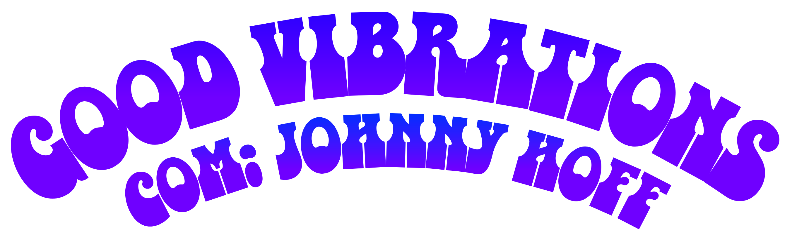

Bem-vindo ao Good Vibrations! Somos um programa de rádio que traz as melhores músicas e informações sobre surf e rock diretamente de Saquarema para o mundo. Com uma audiência global, nosso objetivo é proporcionar uma experiência única e de qualidade para nossos ouvintes.
Good Vibrations é um programa de rádio iniciado em Janeiro de 2023 de Saquarema, RJ, Brasil. Transmitida internacionalmente alcançando público de dezenas de países pela Rádio Saquarema Surf Rock, o programa Good Vibrations foi construído com estética sessentista e formato inspirado por rádios inglesas, apresentando ao ouvinte o melhor do rock com viés artístico e musical tanto underground como mainstream, antigo ou lançamento, apresentado por Johnny Hoff todos os Domingos às 16h e Quartas feiras às 20h.